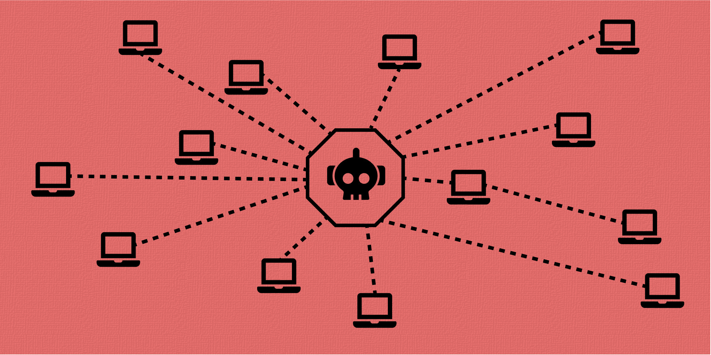

Una botnet, o rete di bot,è un malware che consiste nel creare una rete fatto da dei computer zombie che soddisfano le intenzioni dell'hacker.
I segnali includono un rallentamento del computer, un funzionamento insolito dello stesso, la comparsa di messaggi di errore o l'avvio improvviso della ventola con il computer non utilizzato.
Il modo migliore è eseguire una scansione antivirus sul computer, in modo da individuare e rimuovere il malware della botnet.
